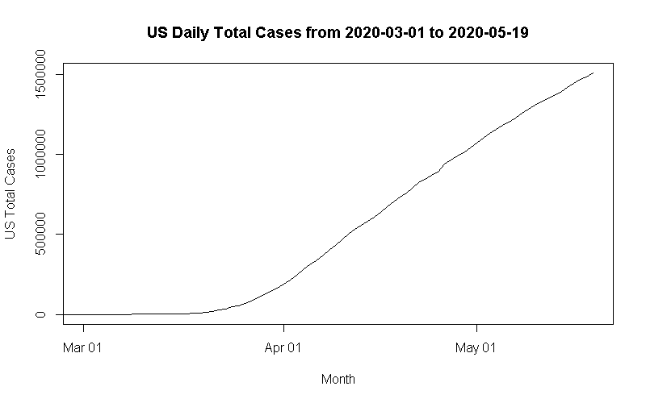

on the implications of opening early
as everyone and their mom is aware, life is not quite business as usual. due to a pandemic of a respiratory disease that is highly contagious, much of the united states is currently on lockdown to mitigate its spread and allow hospitals to keep up with the effects of covid19.
now, i do not claim to be an epidemiologist, virologist, or any other kind of expert. i am just a kid sitting in her home during quaratine that has little else to do except plot the cumulative number of new cases everyday in cities near me. and honestly? things are not back to normal by any means.
the united states has yet to reach the plateau portion of the logistic curve. it is unclear if we have even reached the inflection point where things begin to turn around.


we could have been preparing in the three months we had, but unfortunately not enough was done. soon after things began to quiet in wuhan, reports of overflowing morgues and overwhelmed hospital staff in new york were dominating the news cycles.
i think that we're being too hasty by far to be considering reopening. granted, a semilinear growth rate is much better than an exponential, but we simply cannot expect our health infrastructure to be able to keep up. this will be especially true if the warnings from health experts go unheeded about the potential double trouble from both covid19 and influenza in the fall.
even in the san gabriel valley where i live, things do not seem to be looking great. in two cities where i live

by contrast, new zealand has been doing phenomenally. it has a beautiful logistic curve, and very few cases remaining on the island. as far as i recall, they have somewhere in the ballpark of three cases in the entire country.

signing off for now.
-qeb, 22 may 2020